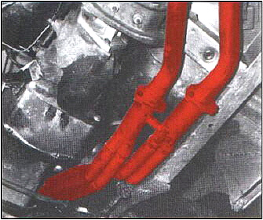
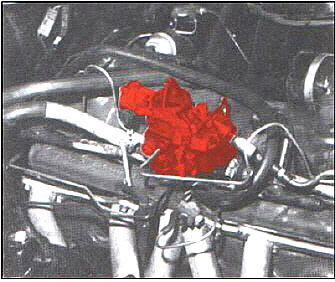

Part 1 - Page 3
Part 1 - Page 3 |
Gain of 11 Horsepower
At this stage, our little six-banger was producing 76 horsepower at the rear wheels, and the only expenses incurred were drilling the main jet and removing the air cleaner. So our gain from 65 to 76 horsepower had been extremely economical. For the next changes, we had to dip into the tiII. |
Installing Headers
Listening to the exhaust setup on this engine, we realized it was designed with some inherent backpressure. This is not all bad, as some engines operate very well with a slight I amount of backpressure. However, since we were trying to uncork some horsepower, it was decided to attack this system "headers on." We took the car to Doug's Headers and asked if they had a setup for a 200 cubic inch engine. Since Doug's is one of the biggest in the business, we felt he would offer some sort of header for this engine. But, once again, the cupboard was bare-the six cylinder engine had not been included when it came to performance goodies.
Doug, being a practical man, offered to make a setup for experimental purposes. He set about the job in a most workman-like manner and came up with a setup that sounds exactly like an XKE Jaguar, or as we here in California sometimes call them, a "Tijuana Ferrari" All in all, a very pleasing sound, and certainly one that is not objectionable in any way to the "law" or the occupants of the car, was produced. In fact, I found my middle-aged foot acting like a young whipper-snapper's just to hear the beautiful tone.
So back we went to the dyno to see what gains we had made with the header system. Much to our surprise we recorded 86 horsepower, or a net gain of 10 horsepower at the rear wheels and for a cost of around $125. This certainly proved to be a most worth while venture since we not only gained gobs of horsepower, we also got a good-sounding exhaust that scares every Camaro six for miles around. |

Figure 3 - Tube Type Headers |

Figure 4 - Ford Carburator from a 240CID Engine |
Installing 240 Cu. In. Carburetor
The thought then occurred that we could use a larger carburetor to great advantage. Nestled as it is in a very low hood compartment, this becomes somewhat of a problem since the carburetor has to be extremely small to allow room enough for an ample-sized air cleaner. We found The solution at our local Ford dealer parts bin in the form of a carburetor from The 240 cubic inch six cylinder Ford engine.
This carburetor gave us a throttle bore diameter of 1.687 with a venturi of 1.290. The standard unit had a throttle bore of 1.437 and a venturi of 1.100. Since the carburetor was of the same height and air horn size as the standard unit, we figured it just had to work and certainly could do nothing but good in the horsepower department. When trying to install it we found we had to open up the aluminum heater manifold that sits underneath the carburetor to match the newer and larger carburetor opening. This was accomplished by tapering it out to the size of the new throttle bore.
We also noticed the air cleaner would hit the new choke location on the larger carburetor, so we had to work a dimple into the bottom plate just above the automatic choke housing to make this fit. When we tried to hook up the accelerator linkage, we noticed the arm on the carburetor would have to be bent a littlie toward the horizontal position to line up. Heating the throttle lever and bending it to a horizontal position accomplished this. This all sounds like a lot of changing, but actually the whole job can be accomplished by any competent mechanic and in less than an hour.
To make the automatic choke heat-line hookup, we used a universal stove that clamps onto an exhaust tube. Then we used a piece of steel tubing covered with asbestos to make the bi-metal spring in the automatic choke operate as it was designed to do.
Once again, we went back to the dyno, hooked up the air-fuel ratio gauge and recorded a reading of 90 rear wheel horsepower at 4000 rpm (a gain of 4 horsepower).
The carburetor we used was Ford part number C7AZ-9510-AA and is available from any Ford dealer for $25.60. This is certainly a most reasonable expenditure for an additional four horsepower at this stage of tuning. The air-fuel ratio, by the way, with stock jetting in the new carb, was 13:1. So, we were more than satisfied because a carburetor that can be installed and not have to be rejetted is a rarity when doing this type of work. We should note that this particular carburetor was jetted for use with thermactors. Jet sizes are usually .003 richer on such units. |
|
|
|